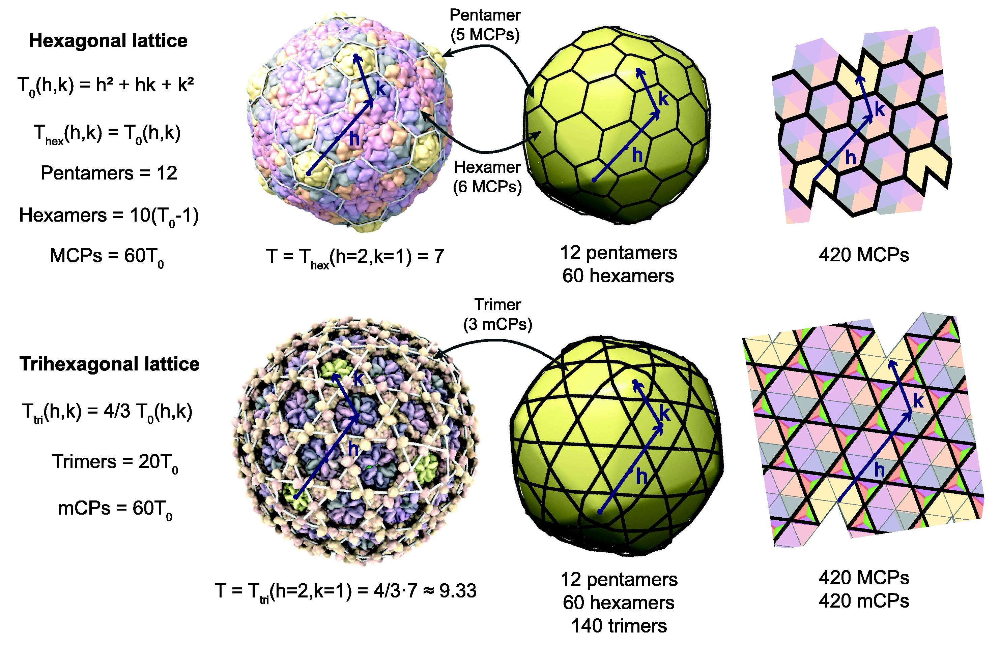

Introduction
Tailed phages are among the most abundant and diverse organisms in the ecosystem. They regulate bacterial communities and thus play an essential role in systems from the human gut biome (Maurice, 2019) to the global carbon cycle (Lara et al., 2017). The genome lengths of tailed phages range from 5 to 550 kilobase pairs (kbp)(M. Iyer et al., 2021)(Lee et al., 2022), which is key to why they have such diverse roles across ecosystems (Luque et al., 2020). This wide range of genomes lengths necessitates diversity in the size of the protein shells, called capsids, that contain these genomes(Lee et al., 2022). Indeed, capsids of tailed phages range from 30 to 180 nanometers (nm) in diameter(Duda & Teschke, 2019). Despite the diversity in size, tailed phages use only variants of a single type of protein fold, the HK97 fold(Duda & Teschke, 2019) (Suhanovsky & Teschke, 2015). The ubiquity of this fold, and the variety of architectures it displays, suggests that its versatility helps tailed phages evolve to fill many different roles(Duda & Teschke, 2019). The HK97 fold is also not exclusive to tailed phages and is also found in some cellular nanocompartments called encapsulins(Suhanovsky & Teschke, 2015).
The majority (80-90%) of tailed phages form icosahedrally symmetric capsids (Luque et al., 2020). This highly symmetric architecture is favorable for viruses because it reduces the genome space required to encode capsid proteins(Twarock & Luque, 2019). Icosahedral symmetry is the most common type of symmetry seen in viral capsids. However, tailed phages stand out for how they build capsids with larger genomes and more complex architectures than similar families of icosahedral viruses(Luque et al., 2020). Generalized theories of icosahedral capsid geometry describe several possible lattices capsids can adopt(Twarock & Luque, 2019). Each 2D lattice represents a different way that the Major Capsid Proteins (MCPs), and sometimes minor Capsid Proteins (mCPs), can form into locally symmetric groups called capsomers. The triangulation number, or T-number, determines the total number of proteins, and thus the total number of capsomers, used to build a capsid. A total of \(60T_0\) MCPs are needed to build a complete capsid(Prasad & Schmid, 2012).
|  |
|---|
| Figure 1: PLACEHOLDER FOR GEOMETRIC FIGURE |
These geometric theories have proven useful in analyzing and classifying viral capsids. The T-number effectively predicts capsid and genome sizes in tailed phages and other viral families(Lee et al., 2022), but the lattice’s meaning is harder to interpret. Strictly speaking, the polygons represent locally symmetric groups of proteins(Šiber, 2020), but coarse-grained models of capsid assembly and dynamics often treat capsomers as rigid mechanical subunits(HAGAN, 2014)(Aznar et al., 2012). Identifying the rigid subunits of HK97-fold capsids can help explain how they achieve their versatility, and whether geometric theories can effectively predict such rigid subunits. HK97 fold capsids generally use pentamers and (asymmetric) hexamers as their procapsid assembly units(Duda & Teschke, 2019), but maturation mechanisms can differ significantly between capsids(Suhanovsky & Teschke, 2015), so they are not necessarily the rigid subunits of the mature capsid. Inter-capsomer interactions in domains unique to one particular fold often regulate assembly, and the maturation process results in significant conformational changes in the proteins(Duda & Teschke, 2019).
We aim to identify rigid subunits of mature capsids using HK97-like folds and determine how their unique inter-capsomer interactions affect their rigidity. Identifying the rigid subunits of viral capsids often require sophisticated experimental or computational techniques that are not suited to systematic application(Polles et al., 2013). We implement a general-purpose technique developed by (Polles et al., 2013) for identifying quasi-rigid subunits called Quasi-Rigid Domain Decomposition. This technique has two main features: the determination of capsid dynamics through Normal Mode Analysis using a coarse-grained Elastic Network Model, and the subdivision of the capsid into quasi-rigid domains using clustering methods(Ponzoni et al., 2015). We apply the method to encapsulins and capsids with T numbers from 1 to 13, ranging in diameter from 20nm to 90nm. We then determine the overlap between these subunits and the capsomers predicted by geometric theory, and attempt to determine how the unique inter-capsomer interactions of each capsid impact their rigid subunits.
References
- Maurice, C. F. (2019). Considering the Other Half of the Gut Microbiome: Bacteriophages. MSystems, 4(3), e00102–19. https://doi.org/10.1128/mSystems.00102-19
- Lara, E., Vaqué, D., Sà, E. L., Boras, J. A., Gomes, A., Borrull, E., Díez-Vives, C., Teira, E., Pernice, M. C., Garcia, F. C., Forn, I., Castillo, Y. M., Peiró, A., Salazar, G., Morán, X. A. G., Massana, R., Catalá, T. S., Luna, G. M., Agustí, S., … Duarte, C. M. (2017). Unveiling the role and life strategies of viruses from the surface to the dark ocean. Science Advances, 3(9), e1602565. https://doi.org/10.1126/sciadv.1602565
- M. Iyer, L., Anantharaman, V., Krishnan, A., Burroughs, A. M., & Aravind, L. (2021). Jumbo Phages: A Comparative Genomic Overview of Core Functions and Adaptions for Biological Conflicts. Viruses, 13(1). https://doi.org/10.3390/v13010063
- Lee, D. Y., Bartels, C., McNair, K., Edwards, R. A., Swairjo, M. A., & Luque, A. (2022). Predicting the capsid architecture of phages from metagenomic data. Computational and Structural Biotechnology Journal, 20, 721–732. https://doi.org/https://doi.org/10.1016/j.csbj.2021.12.032
- Luque, A., Benler, S., Lee, D. Y., Brown, C., & White, S. (2020). The missing tailed phages: Prediction of small capsid candidates. Microorganisms, 8(12), 1–18. https://doi.org/10.3390/microorganisms8121944
- Duda, R. L., & Teschke, C. M. (2019). The amazing HK97 fold: versatile results of modest differences. Current Opinion in Virology, 36, 9–16. https://doi.org/https://doi.org/10.1016/j.coviro.2019.02.001
- Suhanovsky, M. M., & Teschke, C. M. (2015). Nature׳s favorite building block: Deciphering folding and capsid assembly of proteins with the HK97-fold. Virology, 479-480, 487–497. https://doi.org/https://doi.org/10.1016/j.virol.2015.02.055
- Twarock, R., & Luque, A. (2019). Structural puzzles in virology solved with an overarching icosahedral design principle. Nature Communications, 10(1), 1–9. https://doi.org/10.1038/s41467-019-12367-3
- Prasad, B. V. V., & Schmid, M. F. (2012). Principles of virus structural organization. Advances in Experimental Medicine and Biology, 726, 17–47. https://doi.org/10.1007/978-1-4614-0980-9_3
- Šiber, A. (2020). Icosadeltahedral Geometry of Geodesic Domes, Fullerenes and Viruses: A Tutorial on the T-Number. Symmetry, 12(4). https://doi.org/10.3390/sym12040556
- HAGAN, M. F. (2014). Modeling Viral Capsid Assembly. In Advances in Chemical Physics: Volume 155 (pp. 1–68). John Wiley & Sons, Ltd. https://doi.org/https://doi.org/10.1002/9781118755815.ch01
- Aznar, M., Luque, A., & Reguera, D. (2012). Relevance of capsid structure in the buckling and maturation of spherical viruses. Physical Biology, 9(3). https://doi.org/10.1088/1478-3975/9/3/036003
- Polles, G., Indelicato, G., Potestio, R., Cermelli, P., Twarock, R., & Micheletti, C. (2013). Mechanical and Assembly Units of Viral Capsids Identified via Quasi-Rigid Domain Decomposition. PLOS Computational Biology, 9(11), 1–13. https://doi.org/10.1371/journal.pcbi.1003331
- Ponzoni, L., Polles, G., Carnevale, V., & Micheletti, C. (2015). SPECTRUS: A Dimensionality Reduction Approach for Identifying Dynamical Domains in Protein Complexes from Limited Structural Datasets. Structure, 23(8), 1516–1525. https://doi.org/10.1016/j.str.2015.05.022